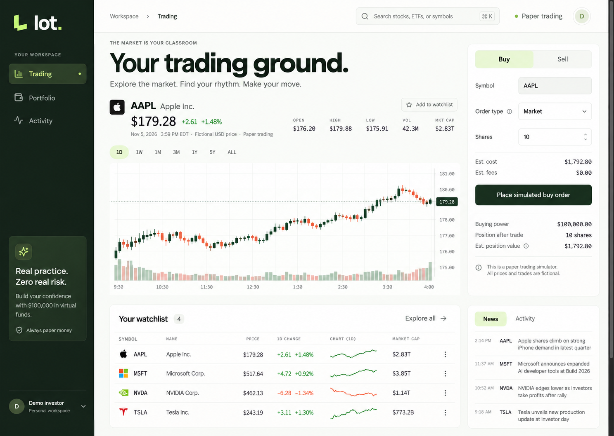
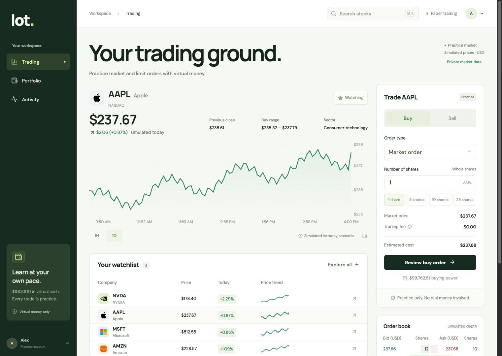

<!doctype html><meta charset="utf-8"><title>Lot order controls comparison</title><style>body{margin:0;background:#e7eae5;color:#172b20;font:18px system-ui}main{display:flex;gap:24px;padding:16px}figure{margin:0}figcaption{padding:12px 0}.crop{position:relative;overflow:hidden;width:340px;height:680px}.crop img{position:absolute;width:1440px;height:1024px;max-width:none}</style><main><figure><figcaption>Reference · order controls</figcaption><div class="crop"></div></figure><figure><figcaption>Implementation · review controls</figcaption><div class="crop"></div></figure></main>